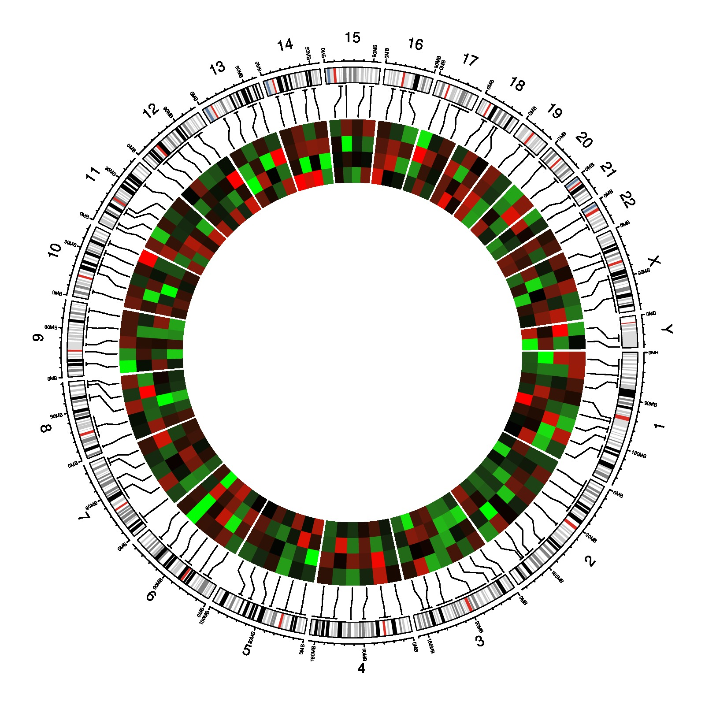

library(circlize)
par(mar = c(1, 1, 1, 1))
circos.par(cell.padding = c(0, 0, 0, 0))
circos.initializeWithIdeogram()
bed = generateRandomBed(nr = 100, nc = 4)
circos.genomicPosTransformLines(bed, posTransform = posTransform.default, horizontalLine = "top", track.height = 0.1)
f = colorRamp2(breaks = c(-1, 0, 1), colors = c("green", "black", "red"))
circos.genomicTrackPlotRegion(bed, stack = TRUE, panel.fun = function(region, value, ...) {
circos.genomicRect(region, value, col = f(value[[1]]),
border = f(value[[1]]), posTransform = posTransform.default, ...)
}, bg.border = NA)
circos.clear()